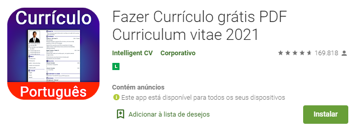

O currículo é seu passaporte para uma entrevista de emprego. Por isso você tem que cria-lo com cuidado para exibir bem seu perfil profissional. Imagine perder uma oportunidade por ter um currículo confuso, incompleto, com informações desnecessárias ou com até com erros de português. Nada disso! com esse guia você vai aprender a fazer um currículo pra impressionar qualquer recrutador.
O que um currículo tem que ter?
Dados Pessoais
Nome completo
Endereço
Data de nascimento
Contato (e-mail, telefone e celular)
Link do linkedIn - Conheça o LinkedIn!
CUIDADO: se você tem um e-mail com gíria ou piada não use. Crie um novo e-mail com seu nome e sobrenome. E fique atento(a), pois muitas entrevistas podem ser marcadas por e-mail.
Objetivo Profissional
Você deve colocar o cargo da vaga que você se candidatou. É muito importante adaptar seu currículo para cada vaga que você se candidatar. Se você tem experiências em áreas diferentes faça um currículo para cada área que você está disposto a se candidatar.
CUIDADO: não coloque objetivos vagos como:
"Estou a disposição da empresa", "aceito o que a empresa propuser", "trabalho no que a empresa preferir", "nem primeiro emprego"
Isso mostra que você não tem foco nenhum.
Caso seja uma vaga de jovem aprendiz, pode acrescentar essa informação junto da área
Exemplo:
Jovem Aprendiz - área financeira
Qualificações
Apresentação profissional simples e resumida que vai convencer o recrutador a ler seu currículo até o final e te chamar para uma entrevista.
O que não pode ter: qualidades, autoelogios, pedidos de ajuda.
Formação
Se você tem ensino superior, mestrado, pós mestrado, doutorado. Não precisa colocar sua graduação do ensino médio ou fundamental.
Se você tem algum curso técnico relacionado à vaga que está se candidatando é interessante coloca-lo.
Se você tem ensino médio completo, não precisa colocar o ensino fundamental.
Se você ainda está cursando o ensino médio, pode colocar o ano de termino do ensino fundamental e a previsão de termino do ensino médio.
Idiomas
É interessante colocar os idiomas se você está em um nível intermediário ou maior.
Mas fique atento à vaga: Se a vaga pede idioma fluente, pode ter certeza que a entrevista será nesse idioma.
Também vale para vagas que requerem pelo menos idioma básico, nesse caso você pode colocar os idiomas que você tem nível básico.
Experiências profissionais
NOME DA EMPRESA - PERÍODO - CARGO - FUNÇÕES - RESULTADOS OBTIDOS
(importante resumir o que você contribuiu para a empresa, são coisas que serão interessantes pra que o entrevistador querer saber mais de você durante a entrevista)
Cursos
Cursos relevantes para a área
ESCOLA - PERÍODO
Atividades Extra curriculares
Essa parte é excelente caso você não tenha experiências profissionais
Concursos escolares, olimpíadas de matemática, trabalho voluntário, bicos temporários (exemplo: lojas que contratam em período de Natal)
Preciso de foto no meu currículo?
A resposta é não. A maioria das empresas atualmente não pedem foto no currículo e até veem com maus olhos essa prática.
Preciso de um computador para fazer um currículo?
Você pode fazer seu currículo completamente do seu celular. Existem vários aplicativos para isso. Gostaríamos de recomendar:
Aplicativo: Fazer Currículo grátis PDF Curriculum vitae 2021 Você pode criar seu currículo com diversos formatos prontos diferentes. Assim é só salvar em no formato PDF dentro do próprio aplicativo e já está pronto para enviar!